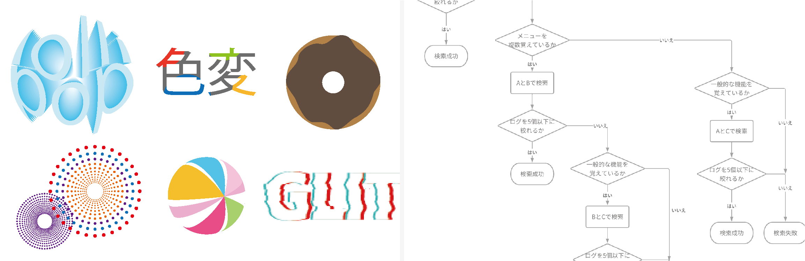
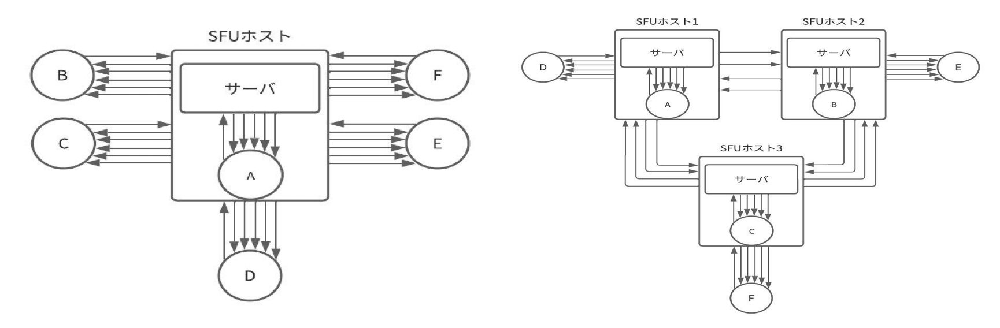
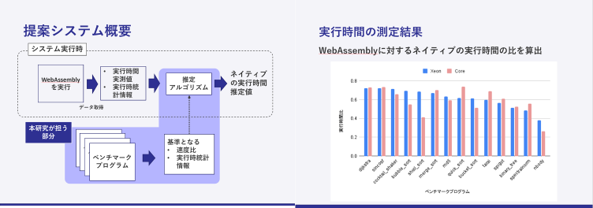
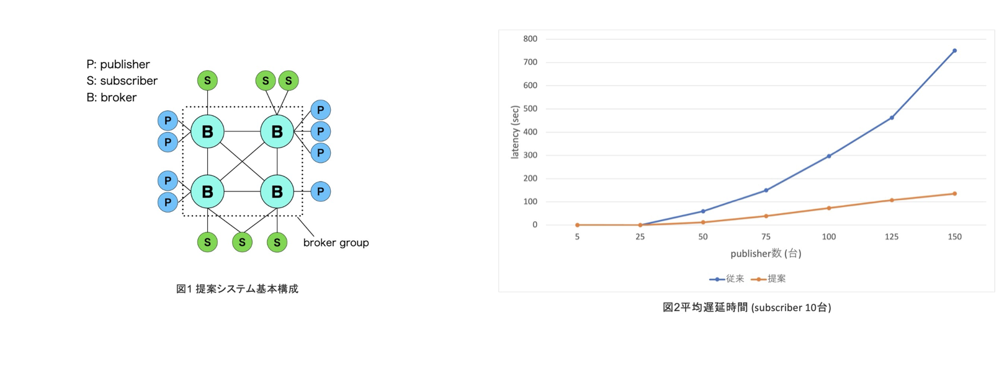

Research
コンピューティングデザイン研究室
山崎 憲一 教授
私たちの生活を豊かにするコンピュータをデザインしよう
超小型コンピュータが組み込まれた電子タグやセンサがネットワークに接続されるIoT（Internet of Things）の時代がもう始まっています。IoTからの膨大なデータは数百万台のコンピュータからなるクラウドに集められ、人工知能のアルゴリズムにより解析され、新しいサービスを次々に生み出して行きます。コンピュータは、これからも私たちの生活を大きく変えていくでしょう。そんな未来のシステムを自分の手でデザインしてみませんか。
-

描画作業の履歴を用いた支援ツールの提案
新井 優希 -

ビデオ会議の分散型SFUホストの提案
草刈 大和 -

格闘ゲームにおける複数攻撃候補に対応可能な行動をする対戦AIの提案
沼野 陸 -

WebAssemblyの実行時統計情報に基づくネイティブバイナリの実行時間の推定
山下 亮輔 -

IoT データ収集のための複数 broker による MQTT システムの提案
鈴木 啄斗
-
新井 優希
描画作業の履歴を用いた支援ツールの提案
llustratorなどの描画ツールを使用する際、作図のための操作手順は時間が経つと一部または全て忘れることがある。覚えている操作があれば、それを含む過去の操作履歴を見つけ出すことで操作手順を思い出せると考えられる。描画作業における操作履歴を用いて、忘れた操作手順を検索可能とすることによる支援方法を提案した。
-
草刈 大和
ビデオ会議の分散型SFUホストの提案
ビデオ会議は多人数での会議を実現するために、SFUサーバが用いられている。サーバを用いずにより多くの人数でP2Pでの会議を作成するために、SFUの機能をクライアント側で動作させた。これをSFUホストと呼ぶ。SFUホストが1台のみだと負荷が集中してしまうため、SFUホストを複数作成することで、SFUホスト間で負荷を分散させた。
あなたにとってデザインとは?人々に興味、関心を与えるもの。
全てのものはデザインされていると考える。 -
沼野 陸
格闘ゲームにおける複数攻撃候補に対応可能な行動をする対戦AIの提案
対戦型格闘ゲームは、対戦相手としてAIが操作するキャラクタと対戦ができる。従来のAIは対戦相手の攻撃を予測してから行動を探索しているが、予測が外れた際に選択した行動が有効ではないという課題がある。本研究では、対戦相手の複数の攻撃候補に対してどの攻撃が行われても対応できる行動をするAIの提案を行った。
あなたにとってデザインとは?私たちの日々の暮らしを支えてくれてるもの
-
山下 亮輔
WebAssemblyの実行時統計情報に基づくネイティブバイナリの実行時間の推定
クラウドコンピューティングの普及に伴い需要が高まるサーバレスシステムにおける技術課題は、 コールドスタートの影響による応答速度の低下である。そこで、本研究では先行研究のシステムのアーキテクチャに基づく提案手法によって、技術課題の解決を目指す。
あなたにとってデザインとは?人々の生活を豊かにし、彩りを添えるものだと思います。
私は技術者として、そうしたデザインの実現に携わりたいです。 -
鈴木 啄斗
IoT データ収集のための複数 broker による MQTT システムの提案
MQTT は、IoT関連の分野で特に使われている通信プロトコルである。大量のメッセージを通信するとbrokerと呼ばれるサーバーに負荷がかかり、メッセージ到達時間が増大してしまう。本研究では、複数のbrokerを用いて負荷を分散させ、メッセージ到達の遅延を解消するシステムの提案を行った。
あなたにとってデザインとは?常にいろいろな場所で自分の人生を豊かにしてくれるもの
エンジニアにも必要不可欠な知識